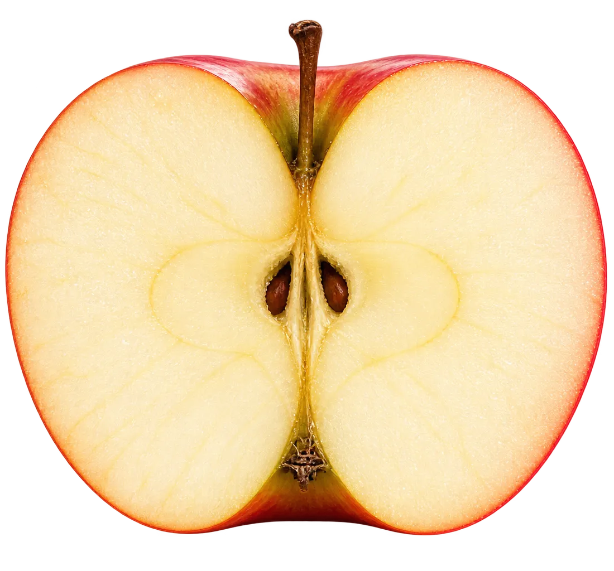
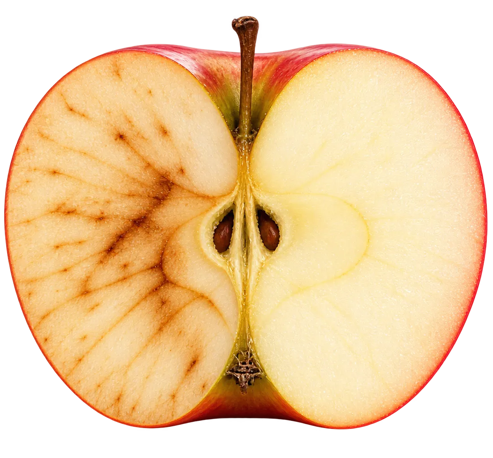
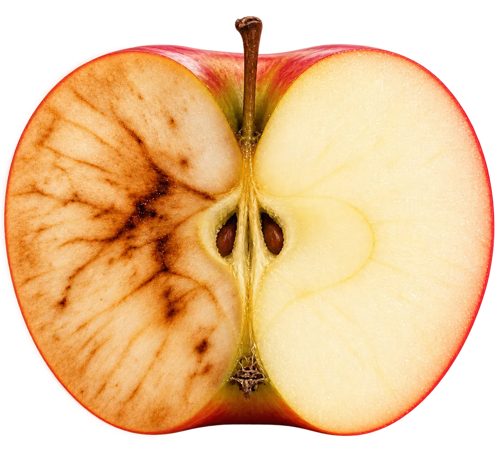
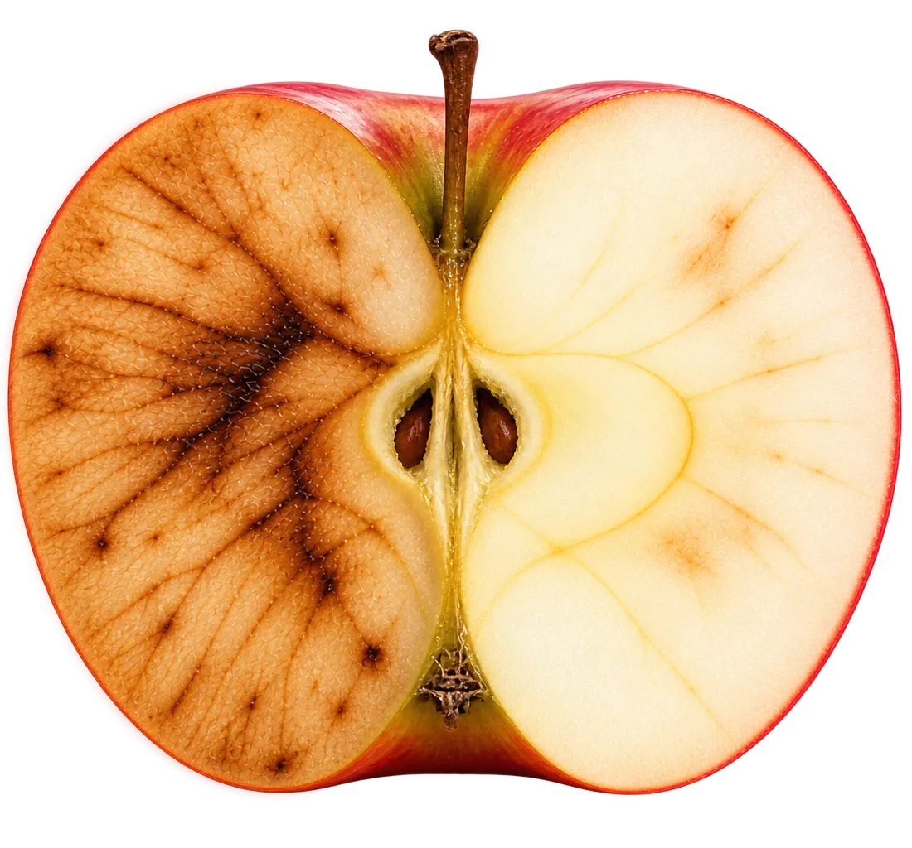

Real Antioxidant Protection.
Visible Results.
Our liposomal serum delivers actives deeper and faster than conventional formulas. These experiments show the difference — across different subjects, over time.
Apple Oxidation & Browning Inhibition Study
Freshly cut apples were dipped in water (control), standard GSH and liposomal GSH solution and exposed to air for 48 hours.
“Unlike standard glutathione that breaks down over time and leaves cells exposed, Liposomal Glutathione gets absorbed deep into tissue to lock in freshness and defend against oxidative stress for up to 48 hours.”
Explore the science



Cellular Longevity & Freshness Test
Dip fresh flowers in respective solutions – standard GSH and liposomal GSH and keep it for 5 days.
“Liposomal Glutathione maintains steady antioxidant protection to keep tissue upright, hydrated, and fresh throughout the full five-day window.”
Explore the scienceBrowning blocked. Colour intact.
A sliced avocado treated with our liposomal serum resisted oxidation dramatically compared to the untreated half. The liposomal encapsulation allows actives to penetrate the surface and neutralise free radicals before browning begins.
Avocado experiment video